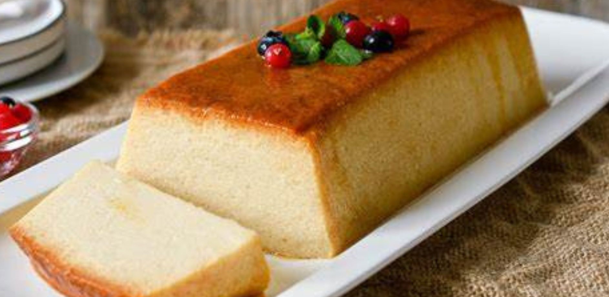

Torta Rogel
Puede que esta torta sea de origen árabe y que aquí se le agregó dulce de leche. Aunque el merengue que lo recubre sea italiano. De todas formas, como es de esperarse, seguro se trata de una fusión entre diversas culturas gastronómicas. La torta rogel es, visualmente, muy llamativa y su sabor también es delicioso. Se trata de tortillas de harina rellenas con dulce de leche y encima lleva crema o merengue. Es fácil de hacer y puedes aprender a prepararlo desde casa.
 Leer Mas
Leer Mas
Pionono dulce
El pionono es un dulce muy popular en Argentina se caracteriza por ser una capa fina de bizcocho y se enrolla en forma de cilindro. En Sudamérica existe una variación en cuánto a la preparación de este platillo, ya que unos lo elaboran dulce y otros salado. Este platillo contiene ralladura de naranja que ayuda a controlar el colesterol y brinda beneficios a la salud cardiovascular, previniendo así la hipertensión y sufrir de un ataque al corazón.
 Leer Mas
Leer Mas
Conos de dulce de Leche
Sí. Este es uno de los clásicos argentinos que sin duda te encantará si eres un fan del dulce de leche. Es una galleta con un poco de dulce de leche encima y luego bañada en chocolate. En Argentina, esta famosa golosina se llama conitos de dulce de leche, y es algo muy tradicional del pais.
 Leer Mas
Leer Mas
Budín de pan
Siempre ha sido uno de mis platos dulces favoritos, y seguramente el de muchos de ustedes también ya que el budín de pan es un clásico entre las recetas de muchas abuelas. Este plato dulce también conocido como pudín de pan tiene la característica de ser muy versátil ya que puede variar sus ingredientes, su preparación y también su presentación. Sus ingredientes principales son el pan duro en trozos, leche, huevo y azúcar.
 Leer Mas